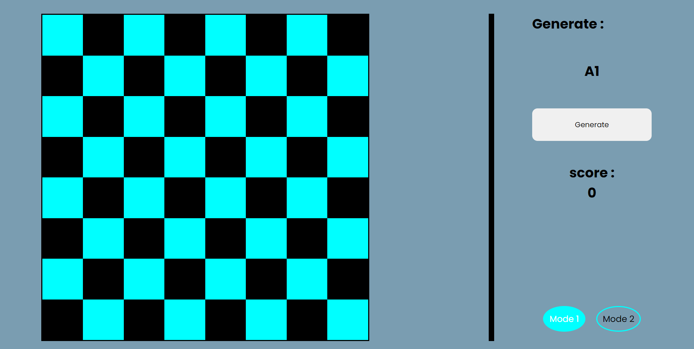
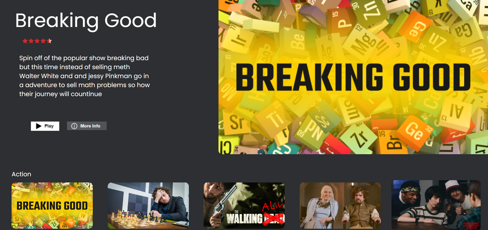
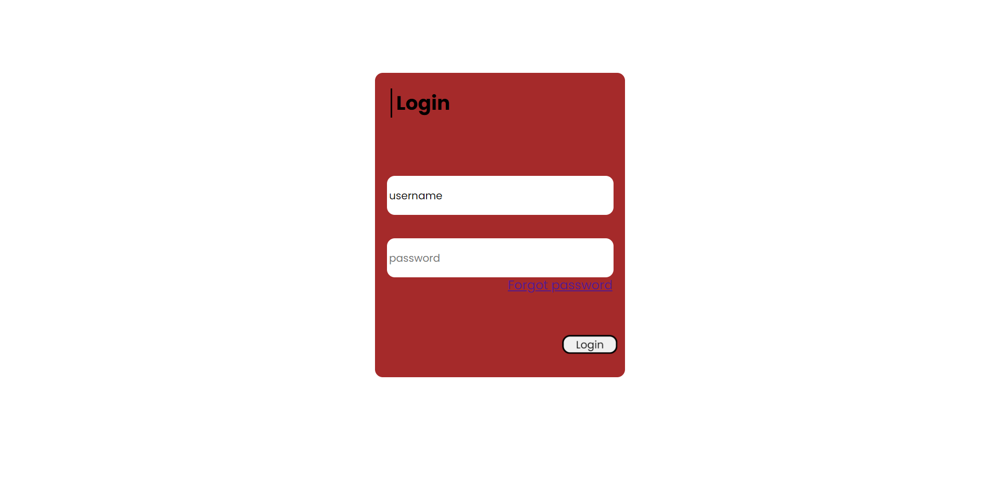
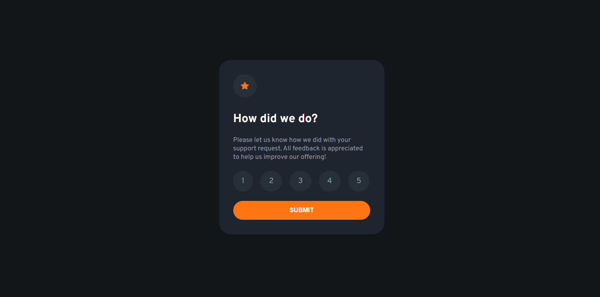

As a computer science student at LIU University, I have a strong foundation in the theoretical aspects of computer science. Alongside my academic pursuits, I have honed my practical skills as a self-taught web developer through various projects and challenges. I am constantly seeking new opportunities to expand my knowledge and improve my abilities. One of my primary resources for learning has been FreeCodeCamp, a platform that offers a comprehensive curriculum for web development. Through its lessons, challenges, and projects, I have gained a strong foundation in HTML, CSS, JavaScript, and other essential technologies. With my combination of academic knowledge and practical experience, I am confident in my ability to design and build dynamic, user-friendly websites that meet the needs of my clients.
My Projects :

guess chess coordinations game

Netflix clone

Simple login page

Interactive rating component
In conclusion, I am proud to present my portfolio which showcases my skills and achievements in my field. I believe that my passion, dedication, and hard work are reflected in these projects. I am grateful for the opportunities that have allowed me to grow both personally and professionally. I am eager to continue learning and taking on new challenges in the future.